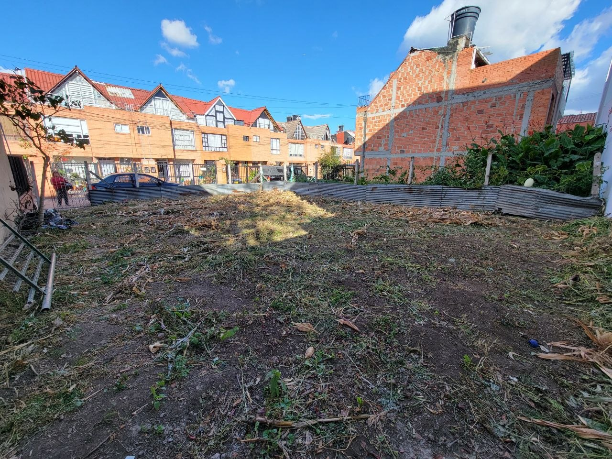
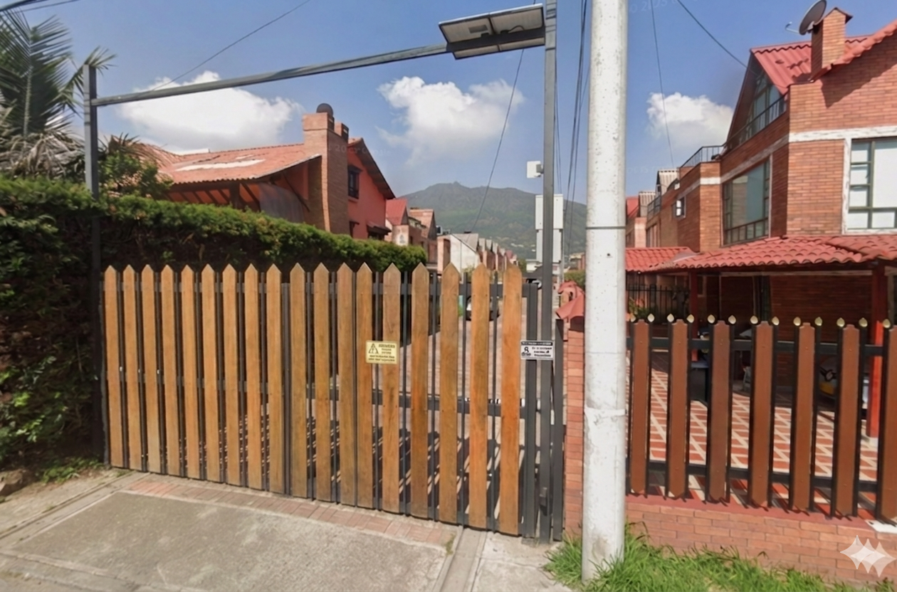
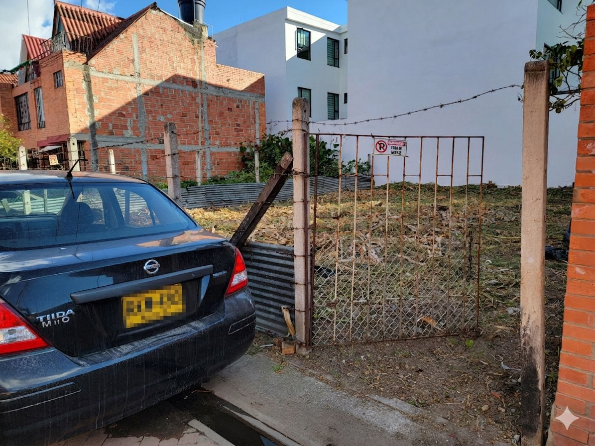
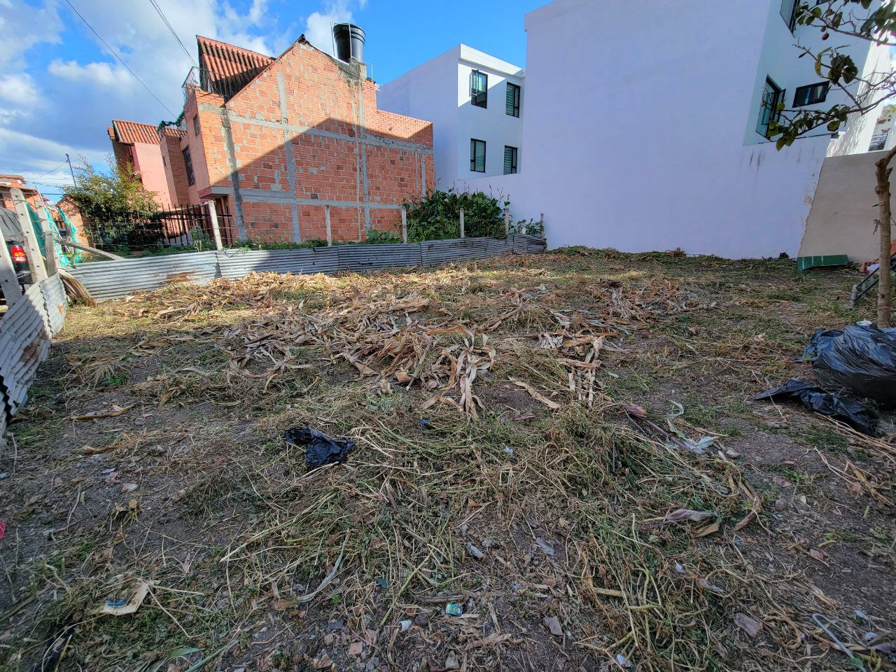
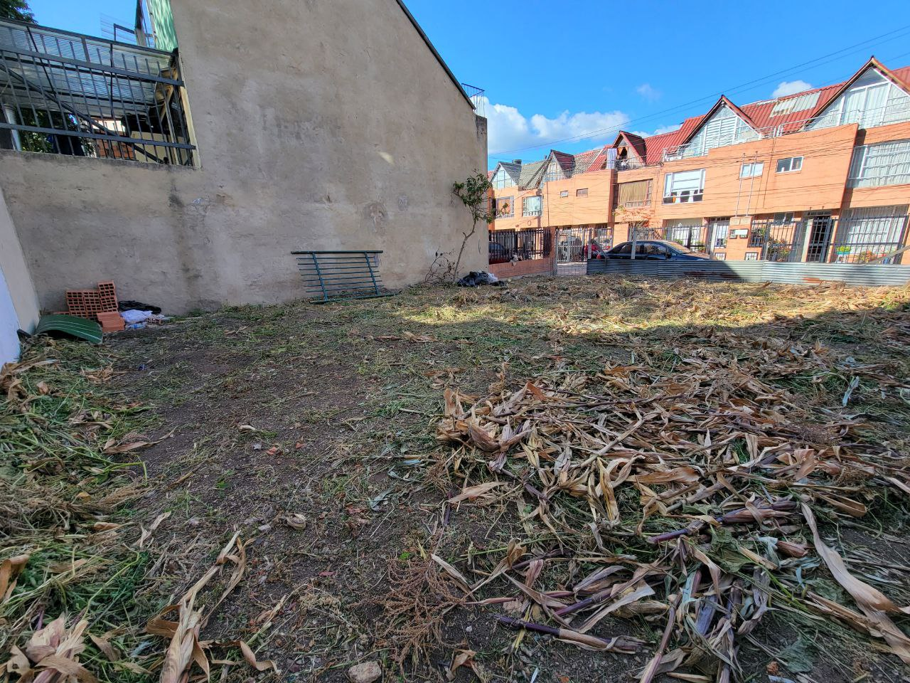
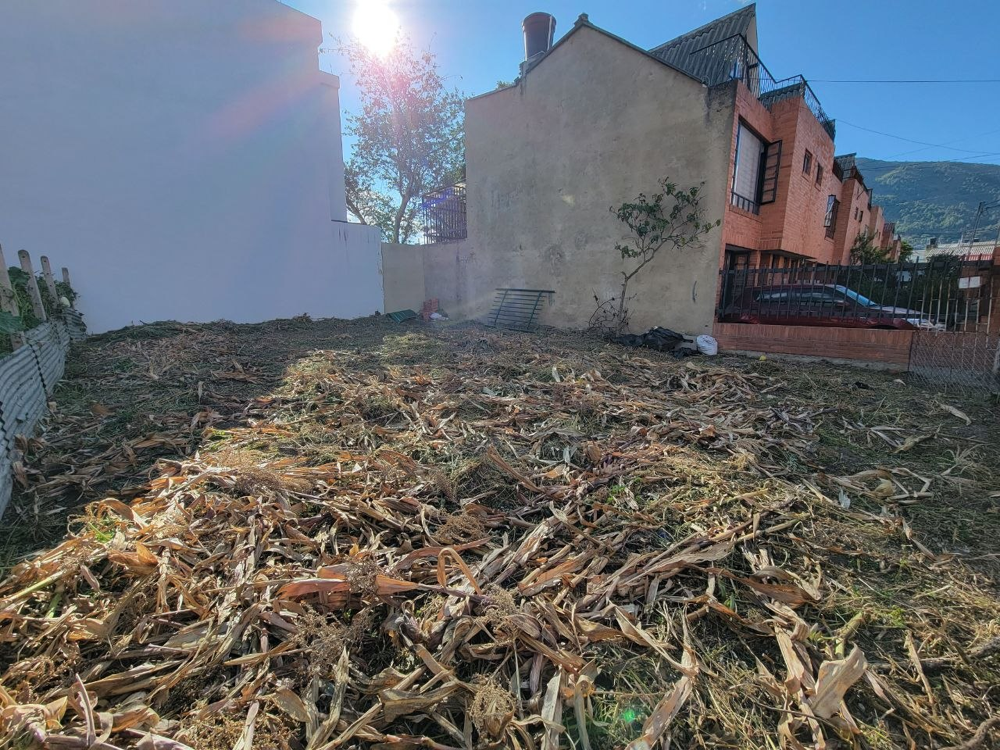

Conjunto residencial
Ubicado en el Conjunto Residencial Los Alisos, con entorno residencial y casas ya construidas.
Vendedor directo · Cota, Cundinamarca
152,67 m² en el Conjunto Residencial Los Alisos, con servicios disponibles, precio negociable y contacto directo para agendar visita por WhatsApp.
Oportunidad familiar y patrimonial
Este lote permite proyectar un hogar con sentido patrimonial: una alternativa para vivir en Cota, cerca de Bogotá, y aprovechar el potencial de construir dos casas juntas e independientes bajo el diseño arquitectónico preestablecido del conjunto.
Es una opción atractiva para una familia que quiere construir su vivienda y, al mismo tiempo, pensar en una segunda unidad para renta, para un familiar o para fortalecer su patrimonio.
Ubicado en el Conjunto Residencial Los Alisos, con entorno residencial y casas ya construidas.
La construcción debe respetar el diseño arquitectónico preestablecido, ayudando a conservar la estética del conjunto.
Cuenta con disponibilidad de agua, luz, gas y alcantarillado.
Contacto directo con Nicolás Segura, sin intermediarios en esta publicación.
Ficha técnica
Datos organizados para que el interesado entienda rápido la oportunidad.
El lote ofrece la posibilidad de desarrollar dos casas juntas e independientes, conservando por fuera el diseño aprobado del conjunto. También podría pensarse como un proyecto familiar flexible, siempre respetando las condiciones establecidas en el reglamento y documentos correspondientes.
Quiero conocer el loteGalería
Imágenes útiles para revisar el lote, la entrada del conjunto, el frente, el fondo y las vías internas.






Ubicación estratégica
El lote se encuentra en el Conjunto Residencial Los Alisos, Cota, Cundinamarca, con referencia diagonal al Salón de Eventos Los Pinos. Una ubicación útil para quienes desean vivir cerca de Bogotá, Chía, Siberia y el centro urbano de Cota.
Abrir ubicación en Google MapsProceso claro
El lote se encuentra libre de deudas, con impuestos y administración al día. La documentación esencial y las condiciones de construcción se suministran directamente a compradores interesados durante el proceso de negociación.
La construcción deberá respetar el diseño arquitectónico preestablecido del conjunto y los permisos o trámites que correspondan ante las autoridades competentes.
Preguntas frecuentes
Sí. El precio publicado es de $320.000.000 COP y es negociable para comprador serio.
Según la información disponible, el lote tiene potencial para desarrollar dos casas juntas e independientes, respetando el diseño preestablecido del conjunto.
Sí. La construcción debe conservar por fuera el diseño arquitectónico aprobado para el conjunto residencial.
Sí. El lote se encuentra libre de deudas, con impuestos y administración al día.
La venta directa en esta publicación la atiende Nicolás Segura.
Puedes enviar tus datos por el formulario o escribir directamente al WhatsApp +57 302 832 7122.
Contacto directo
Déjame tus datos y se abrirá WhatsApp con el mensaje listo para enviar. También puedes escribir directamente al correo o número de contacto.